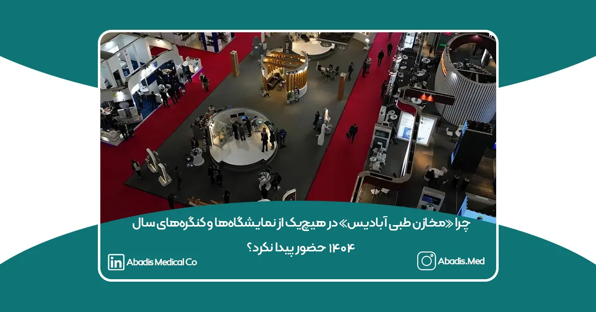

در حالیکه سال ۱۴۰۴ برای صنعت تجهیزات پزشکی کشور سالی مملو از نمایشگاهها، کنگرهها و رویدادهای تخصصی بود، شرکت دانشبنیان مخازن طبی آبادیس برخلاف سالهای گذشته، تصمیم گرفت در هیچیک از این رویدادها مشارکت نداشته باشد. این عدم حضور، پرسشهایی را در میان فعالان صنعت و مشتریان ایجاد کرده است.
آبادیس برای شفافسازی، دلایل رسمی این تصمیم را اعلام میکند:
۱) نبود برنامهریزی مؤثر برای افزایش فروش در رویدادهای سال ۱۴۰۴
با بررسی عملکرد سالهای گذشته، روشن شد که بسیاری از نمایشگاهها و کنگرههای مرتبط حوزه تجهیزات پزشکی، بازده اقتصادی و تجاری لازم را برای شرکتهای تولیدی ایجاد نمیکنند.
در واقع، فقدان استراتژی مشخص و حمایت عملی برگزارکنندگان باعث میشود حضور در این رویدادها عملاً دستاورد قابل توجهی نداشته باشد.
به همین دلیل، آبادیس ترجیح داد منابع مالی، انسانی و زمانی خود را به جای حضور در نمایشگاهها، صرف توسعه محصول، بهبود تولید و تقویت سیستمهای خدماترسانی کند.
۲) برنامهریزی نامناسب و نبود حمایتهای لازم از سوی برگزارکنندگان
بسیاری از رویدادهای سال ۱۴۰۴ با مشکلات زیر همراه بودند:
-
هماهنگی ضعیف و برنامهریزی غیرحرفهای
-
هزینههای غیرمنطقی غرفهسازی و اجاره فضا
-
کمبود امکانات برای شرکتهای دانشبنیان
-
عدم ارائه بستههای حمایتی و مذاکرهمحور
-
نبود مخاطبان واقعی و تصمیمگیر در رویدادها
به همین دلیل، آبادیس این رویدادها را فاقد ارزش افزوده واقعی دانست و تصمیم گرفت بهجای حضور تشریفاتی، تمرکز خود را بر پروژههای پایدار و نتیجهمحور بگذارد.
۳) عدم حضور نمادین در اعتراض به پرداختنشدن مطالبات آبادیس توسط برخی دانشگاههای علوم پزشکی
یکی از مهمترین دلایل عدم حضور آبادیس، تاخیرهای گسترده در پرداخت مطالبات توسط برخی دانشگاهها و مراکز درمانی است.
متأسفانه، در حالی که تجهیزات و محصولات مصرفی بهموقع تحویل میشود، پرداختها ماهها و گاهی بیش از یک سال به تعویق میافتد. این مسئله فشار مالی و عملیاتی زیادی بر شرکتهای تولیدی ایجاد میکند.
آبادیس معتقد است:
وقتی مطالبات شرکتهای دانشبنیان پرداخت نمیشود، حضور در رویدادها صرفاً یک نمایش بینتیجه است.
این عدم حضور، نوعی اعتراض رسمی به وضعیت نامطلوب پرداختها در بخش دولتی و بیتوجهی به تولیدکنندگان داخلی است.
جمعبندی
تصمیم آبادیس برای عدم حضور در نمایشگاهها و کنگرههای ۱۴۰۴، تصمیمی احساسی نبود، بلکه:
-
بر اساس تحلیل اقتصادی،
-
بررسی فنی و عملیاتی،
-
و همچنین اعتراض رسمی به بیتوجهی به حقوق تولیدکنندگان داخلی
گرفته شد.
آبادیس همچنان بر اصول خود (کیفیت، شفافیت، تولید سبز و نوآوری) پایبند است و امیدوار است با ایجاد فضای حرفهایتر، رویدادهایی برگزار شود که واقعاً حامی تولیدکنندگان و صنعت تجهیزات پزشکی کشور باشند.